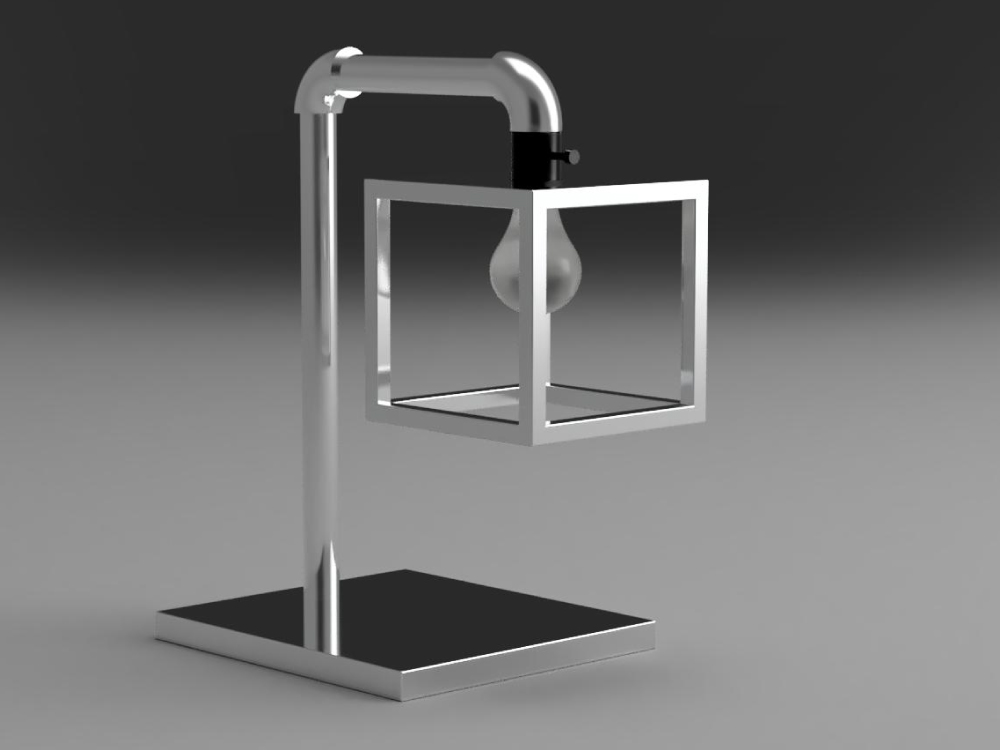

Personalized Lighting Artifact:
A personalized design for classmate Beau. The design was created by interviewing Beau and moving through various stages of prototyping (both physical and CAD model making). The end result is a physical embodiment of Beau's persona developed through interviewing.

Beau is a student who spends a lot of his time in his room studying. He needs bright light to get work done. He wants something practical but also wants it to be visually interesting/appealing.

Early Ideas:

Physical Prototype:
← back to my work